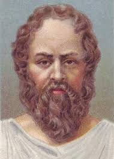

სოკრატე

სოკრატეს დახასიათება ისტორიული გაურკვევლობის ნათელი ილუსტრაციაა. თუ სოკრატეს ოდესმე ერთი სიტყვა მაინც დაუწერია, ჩვენამდე მას არ მოუღწევია. მაშასადამე, სოკრატეზე თანამედროვე წარმოდგენა მთლიანად ისეთ მეორად წყაროებს ეყრდნობა, როგორიცაა პლატონის, არისტოტელეს, არისტოფანესა და ქსენოფონტის ნაშრომები. არისტოფანე ცნობილი იყო, როგორც სატირიკოსი, და ამგვარად სოკრატეს მისეული დახასიათება გაზვიადებული, გადაჭარბებული ან სრულიად ფალსიფიცირებული შეიძლება იყოს.